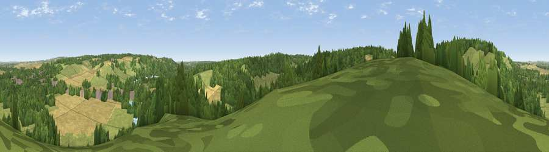

Viewpoint near Goring-on-Thames
#32660 in England · top 46% of its area beats it · near Goring-on-ThamesWhere it is
The exact computed spot (SU 59725 79475). Click the marker for map links.
The view, rendered

A 360° render of this exact spot computed from the terrain model, tree cover and land cover — summer colours, afternoon light, calibrated against photographs of famous viewpoints. Real trees, hedges and buildings will differ in detail.
The panorama
Grey silhouette: terrain skyline in each direction (720 bearings, Earth curvature and refraction included). Dashed green: skyline with trees (+15 m) and buildings (+8 m) as obstacles. Blue strip: how far the ground is visible on each bearing.
Where the view opens
Wedge length = distance to the farthest visible ground on that bearing (vegetation-aware). Rings at 10, 25 and 50 km.
What fills the view
42% woodland · 38% grassland · 16% cropland · 2% water · 2% built-up
Angular shares of the visible panorama (visual magnitude), not map area. Landscape diversity 0.52 (0–1 Shannon).
Key numbers
More beautiful places nearby
The staircase of upgrades: each row has a higher view potential than everything closer. Driving times are estimates from straight-line distance, calibrated against real road routing — check an actual route before setting out.
| Place | Direction | Drive | Score |
|---|---|---|---|
| Viewpoint near Streatley | WNW · 2 km | ~4 min | 56.7 |
| Viewpoint near Streatley | NNW · 2 km | ~5 min | 57.3 |
| Viewpoint near Moulsford | NNW · 4 km | ~9 min | 58.8 |
| Viewpoint near Compton | WNW · 6 km | ~13 min | 64.1 |
| Castle Hill | NNW · 13 km | ~24 min | 68.3 |
| Round Hill | NNW · 14 km | ~25 min | 70.1 |
| Viewpoint near Watlington | NE · 18 km | ~30 min | 70.6 |
| Viewpoint near Lewknor | NE · 20 km | ~34 min | 70.8 |
51.51105, -1.14077 · source: screening · position refined by local search. Computed location — check access rights before visiting.